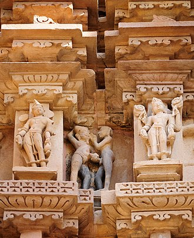
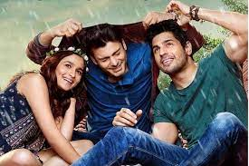

The rights in India regarding the community have been evolving rapidly in recent years. However, Indian LGBTQ+ citizens still face certain social and legal difficulties not experienced by non-LGBTQ+ persons. The country has repealed its colonial-era laws that directly discriminated against homosexual and transgender identities and also explicitly interpreted Article 15 of the Constitution to prohibit discrimination on the basis of sexual orientation and gender identity. But many legal protections have not been provided for, including same-sex marriage. Transgender people in India are allowed to change their legal gender post-sex reassignment surgery under legislation passed in 2019 and have a constitutional right to register themselves under a third gender. Additionally, some states protect hijras, a traditional third gender population in South Asia through housing programs, and offer welfare benefits, pension schemes, free operations in government hospitals as well as other programs designed to assist them. There are approximately 480,000 transgender people in India. In 2018, in the landmark decision of Navtej Singh Johar v. Union of India, the Supreme Court of India decriminalized consensual homosexual intercourse by reading down Section 377 of the Indian Penal Code and excluding consensual homosexual sex between adults from its ambit. Despite strong political movements in favor of LGBT rights, there remains a significant amount of homophobia present among the Indian population, with around one in four Indians objecting to same-sex relationships according to an opinion poll. In the 2010s, LGBT people in India increasingly gained tolerance and acceptance, especially in large cities. Multinational research firm Ipsos released a report on LGBT+ Pride 2021 Global Survey conducted between April 23 and May 7, 2021. The findings show that 2% of the surveyed online Indian population identify as other than male or female, these include transgender, non-binary, non-conforming, gender-fluid, and others. In regards to sexual orientation, the report shows that 3% of the surveyed Indian population identify as homosexual (Including gay and lesbian), 9% identify as bisexual, 1% identify as pansexual and 2% identify as asexual. Totally, 17% identify as not heterosexual (excluding 'do not know', and 'prefer not to answer).
Throughout Hindu and Vedic texts there are many descriptions of saints, demigods, and even the Supreme Lord transcending gender norms and manifesting multiple combinations of sex and gender. Apart from male and female, there are more than 20 types of genders, such as trans woman, trans men, androgynous, pangender, and trigender, etc. Trans people were accepted in ancient India and referred to by terms like "Tritiya Prakriti", "Kaiba" and "napunsaka". Alka Pande says that alternate sexuality was an integral part of ancient India and homosexuality was considered to be a form of the sacred, drawing upon the examples of the hermaphrodite Shikhandi and Arjuna who became a eunuch. Ruth Vanita argues that ancient India was relatively tolerant and views on it were ambiguous, from acceptance to rejection. In 1977 Shakuntala Devi published the first study of homosexuality in India.Whilst convictions under Section 377 were rare, with no convictions at all for homosexual intercourse in the twenty years to 2009, Human Rights Watch have said that the law was used to harass HIV/AIDS prevention activists, as well as sex workers, men who have sex with men, and other LGBT groups. The group documents arrests in Lucknow of four men in 2006 and another four in 2001. Homosexual intercourse was a criminal offence from the introduction of Section 377 of the Indian Penal Code in 1860 until the Delhi High Court's 2009 decision in Naz Foundation v. Govt. of NCT of Delhi. After the Delhi court's ruling was overturned in 2013, homosexual intercourse was re-criminalized until the Supreme Court of India's 2018 ruling in Navtej Singh Johar v. Union of India. This made it an offence for a person to voluntarily have "carnal intercourse against the order of nature."
Urban centers are important hubs of the LGBTQ+ movement. In India, city hubs have helped the community gained visibility since the 1970s. Since the early 2000s, social media and online venues have played a critical role in strengthening LGBTQ+ communities and identities in these cities. The internet has created new spaces for social interaction and community formation. Social media platforms such as Instagram, Twitter and Facebook have been used to create pages and posts that increase queer awareness and visibility in India.Some examples are Instagram profiles "Gaysifamily", "nazariyalgbt", and "lgbthistoryindia". The Gaysifamily website describes their mission "to provide a voice and a safe space to Desis from the South Asian subcontinent that identify as LGBTQ+".They sell and share stickers, artwork, personal stories and zines made by queer Desis. Social media platforms are also important for the development of intimate relationships between queer people in India.For example, virtual platforms such as Grindr and Planet Romeo create private yet public spaces for gay men to be "out" and find partners for hook ups as well as relationships. Class makes a big difference to who is able to access these spaces, as it seems to be the rising Indian middle class and elite who most commonly use these websites. Even before social media became a platform for queer visibility, the internet created possibilities for communication and community building in the LGBTQ+ community. Khush-list, the first mailing list for LGBT South Asians, predominantly Indians in metropolitan cities and those living abroad, was established in 1993. In 1999, LGBT-India was established on egroups, and later transitioned to yahoogroups. Such mailing lists, established well before the advent of social networking sites, continue to remain the mainstay for discussion among middle-class, English-speaking Indians, and include LGBT-India, GayBombay, Good As You (Bangalore), Pratibimb (Hyderabad), and Movenpick/Orinam (Chennai). GayBombay.org (established in late 1998) and Orinam.net (established in 2006) are among the oldest websites that function as online resources catering to a local (Mumbai and Chennai, respectively) and national readership. Dating websites provide an alternative way for meeting people; online communities also offer a safe and convenient environment for meeting gays in India. Online magazines like Pink Pages and Gaylaxy also publish regular issues.
Bollywood and Indian cinema are not new in portraying homosexual characters on the screen; this is often done in satirical, comical, or stereotypical ways. Many contemporary Bollywood films, such as Shubh Mangal Zyada Saavdhan, Kal Ho Naa Ho, Dostana, Kapoor And Sons, Ek Ladki Ko Dekha Toh Aisa Laga, and Aligarh, to name a few, either have homosexual characters or portrayals of homosexual relationships. Some critics argue that same-sex friendship within Bollywood movies is portrayed for a "gay viewership".The use of terms such as "yaar" (friend/lover) can be seen as a way to deter from using the language of "homosexuality" or "gayness". In recent movies, there has been a move away from the portrayal of homosexuality in a satirical and comedic way, and instead of showing a more sensitive, and empathic representation of the struggles that the community has to face. Aligarh and Kapoor And Sons are two of the more recent blockbuster Bollywood movies, both released in 2016, that have made an impact on the portrayal of homosexual men in Indian media. Ek Ladki Ko Dekha Toh Aisa Laga has shown that there are major strides taken in the positive portrayal of homosexuality in cinema. These movies are turning a new page for the role of homosexuality in Bollywood by challenging the previous stereotypical roles portrayed on screen. This is achieved by portraying homosexuality in a new, more truthful, and complex light than has been done previously.
Celebrities, represented in the general Indian media, have voiced their opinions and have advocated for the LGBTQ community in the country. After the 2013 Supreme Court Decision to reinstate S.377, the court agreed to refer the decision to a five-judge constitutional bench based on a curative petition. Many celebrities, have voiced their support for the curative petition and the decriminalization of homosexuality, by repealing S.377. A news article by Akshay Kaushal in the Hindustan Times (3 Feb. 2016), outlines some of these public comments; this includes: Onir, one of the few openly gay film directors who stated, "Now hopefully the five-judge constitution bench will take the decision in our favour. And this law should have been scrapped the day the Britishers left India. So hopefully, the 2009 verdict of the Delhi Court, that decriminalized gay sex among consenting adults, will be back soon." Delhi-based fashion designer, who married his partner Rahul Arora stated, "I am hopeful and positive that the five-judge constitution bench will scrap section 377 and make this country a better place for us to live". National Award-winning filmmaker Apurva Asrani, who wrote the film Aligarh, when referring to the five-judge constitutional bench stated, "the Supreme Court has allowed itself a chance to redeem itself from a blemish on its otherwise spotless image." "This (homosexuality) has been accepted even in our Hindu scriptures. I stand by my gay friends" said Actor Raveena Tandon. "Today’s decision is a great step. However, I think a disparity that can easily be addressed by amending the Indian Penal Code shouldn’t have to be a 15-year-long struggle" said actor and gay rights activist Celina Jaitley. Along with the curative petition, submitted by NGOs, to the Supreme Court of India, leading to the five-judge constitutional bench to re-consider the repeal of section 377, a petition was filed by five gay celebrities. The petition was covered by various news articles, including The Times of India, stating, "The petitioners are lesbian, gay and bisexual (LGBT) citizens of India whose rights to sexuality, sexual autonomy, choice of sexual partner, life, privacy, dignity and equality, along with the other fundamental rights guaranteed under Part-III of Constitution, are violated by Section 377." This is the first time those that are directly effected by the 2013 decision have addressed the court in his manner. The petitioners are, NS Johar (dancer), Sunil Mehra (journalist), Ritu Dalmia (chef), Aman Nath (hotelier), and Ayesha Kapoor (business executive).The petition was not reviewed or added by the Supreme Court; stating that there are already petitions of the same nature that the court is reviewing at the moment, and advised the celebrities to wait till the decision is out before further pursuing this issue. In 2019, Nartaki Natraj became the first trans person to receive the prestigious Padma Shri.